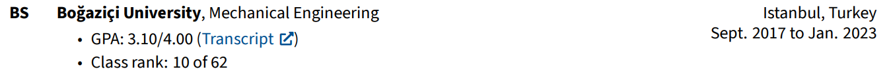
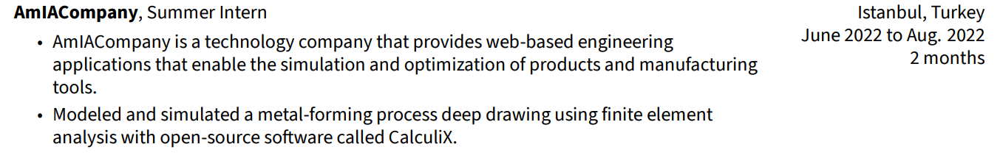
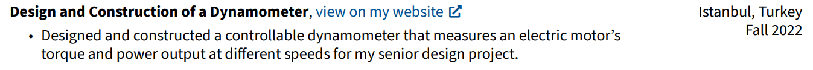
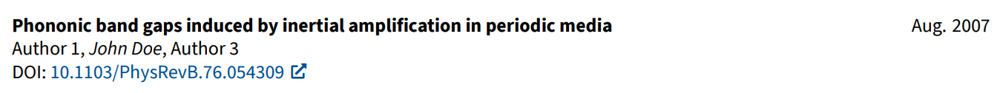

RenderCV: User Guide¶
After you've installed RenderCV with
you can start rendering your CV.
Firstly, go to the directory where you want your CV files located and run:
This will create a YAML input file for RenderCV called Your_Name_CV.yaml. Open this generated file in your favorite IDE and start editing. It governs all the features of RenderCV.
Tip
To maximize your productivity while editing the input YAML file, set up RenderCV's JSON Schema in your IDE. It will validate your inputs on the fly and give auto-complete suggestions.
- Install YAML language support extension.
- Then the Schema will be automatically set up because the file ends with
_CV.yaml.
After you're done editing your input file, run the command below to render your CV:
Entry Types¶
There are five entry types in RenderCV:
- EducationEntry
- ExperienceEntry
- NormalEntry
- OneLineEntry
- PublicationEntry
The whole CV consists of these entries. The table below shows what sections of the input file use which entry type.
| YAML section | Entry Type |
|---|---|
education |
EducationEntry |
work_experience |
ExperienceEntry |
academic_projects |
NormalEntry |
publications |
PublicationEntry |
certificates |
NormalEntry |
skills |
OneLineEntry |
test_scores |
OneLineEntry |
personal_projects |
NormalEntry |
extracurricular_activities |
ExperienceEntry |
custom_sections |
They can be any of the five! |
Info
Note that EducationEntry is not necessarily for education entries only. It's one of the five entry designs that RenderCV offers, and it could be used for anything (see custom sections). EducationEntry just happens to be its name. The same goes for other entries, too.
EducationEntry¶
institution: Boğaziçi University
url: https://boun.edu.tr
area: Mechanical Engineering
study_type: BS
location: Istanbul, Turkey
start_date: "2017-09-01"
end_date: "2023-01-01"
transcript_url: https://example.com
gpa: 3.10/4.00
highlights:
- "Class rank: 10 of 62"
which renders into

ExperienceEntry¶
company: AmIACompany
position: Summer Intern
location: Istanbul, Turkey
url: https://example.com
start_date: "2022-06-15"
end_date: "2022-08-01"
highlights:
- AmIACompany is a technology company that provides web-based engineering
applications that enable the simulation and optimization of products and
manufacturing tools.
- Modeled and simulated a metal-forming process deep drawing using finite element
analysis with open-source software called CalculiX.
which renders into

NormalEntry¶
name: Design and Construction of a Dynamometer
location: Istanbul, Turkey
date: Fall 2022
highlights:
- Designed and constructed a controllable dynamometer that measures an electric
motor's torque and power output at different speeds for my senior design project.
url: https://example.com
which renders into

OneLineEntry¶
which renders into
PublicationEntry¶
title: Phononic band gaps induced by inertial amplification in periodic media
authors:
- Author 1
- John Doe
- Author 3
journal: Physical Review B
doi: 10.1103/PhysRevB.76.054309
date: "2007-08-01"
cited_by: 243
which renders into

Custom Sections¶
Custom sections with custom titles can be created. Each custom section will be an object that looks like this:
title: My Custom Section
entry_type: OneLineEntry
entries:
- name: Testing custom sections
details: Wohooo!
- name: This is a
details: OneLineEntry!
And custom_sections part of the data model will be a list of customs section objects that look like this:
custom_sections:
- title: My Custom Section
entry_type: OneLineEntry
entries:
- name: Testing custom sections
details: Wohooo!
- name: This is a
details: OneLineEntry!
- title: My Other Custom Section
entry_type: EducationEntry
entries:
- institution: Hop!
area: Hop!
study_type: HA
highlights:
- "There are only five types of entries: *EducationEntry*, *ExperienceEntry*,
*NormalEntry*, *OneLineEntry*, and *PublicationEntry*."
- This is an EducationEntry!
start_date: "2022-06-15"
end_date: "2022-08-01"
Each custom section needs to have an entry type, and entries should be adjusted according to the entry type selection.
Note
Some entry types use links, and all the links have a text placeholder. That placeholder can be changed with link_text setting as shown below: